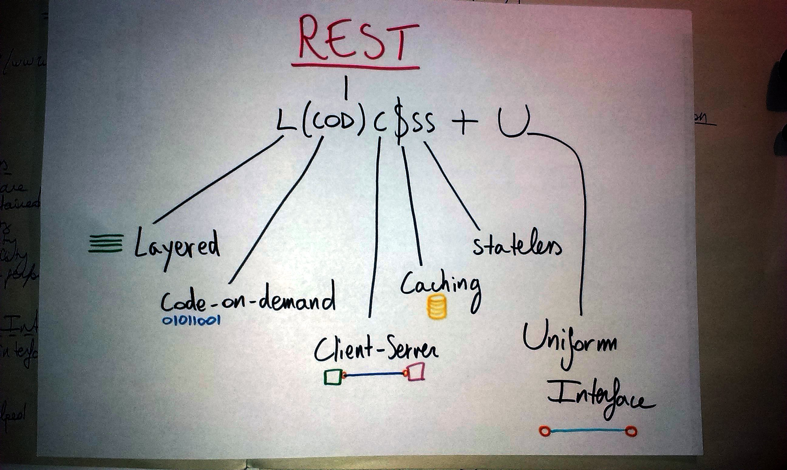
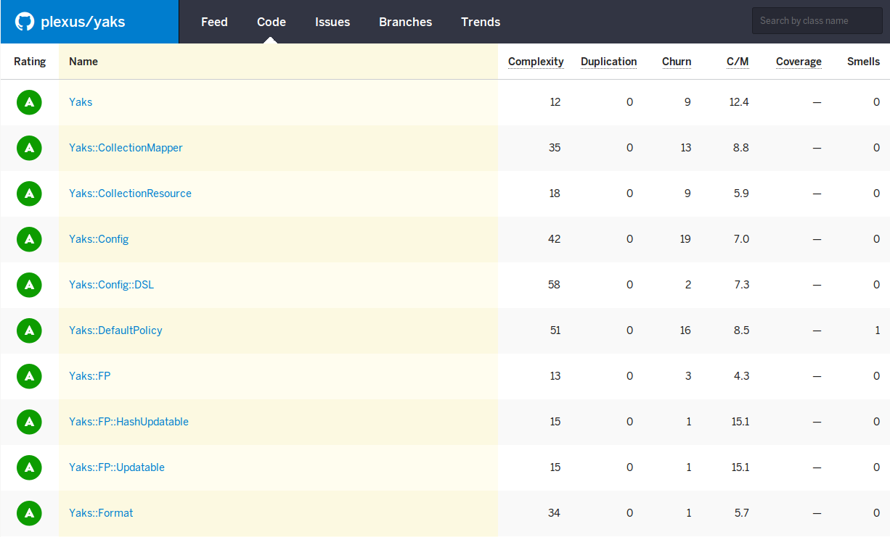

Use the space bar or arrow keys to browse the slides.
Building Hypermedia APIs with Yaks
Ruby User Group Berlin, July 2014
by Arne Brasseur / 白阿仁 / @plexus
Je n’ai fait celle-ci plus longue que parce que je n’ai pas eu le loisir de la faire plus courte.
— Blaise Pascal
Dictionary
Rich Hickey
Marouane Fellaini
rest
rest
A bodily state characterized by minimal functional and metabolic activities.
— Merriam-Webster
rest
7. To remain for action or accomplishment. The answer rests with you.
— Merriam-Webster
REST
REST
“Representational State Transfer”
Roy Fielding, 2000
Architectural Style for Networked Systems
After the fact description of how HTTP + HTML behave
Architecture
Architectural Style
A Set of constraints
e.g.
All components must have the same interface
The system consists of layers that work independently

REST
In order to obtain a uniform interface, multiple architectural constraints are needed.
REST is defined by four interface constraints.
— Roy Fielding
Interface Constraints
identification of resources
manipulation of resources through representations
self-descriptive messages
hypermedia as the engine of application state
Uhhhh… WAT?
Resources
Messages
Hypermedia
Dictionary
The key abstraction in REST is a resource. Anything that can be named can be a resource: a document or image, a service (today’s weather), a collection of other resources, a non-virtual object (e.g. a person), etc.
Any concept that might be the target of an author’s hypertext reference must fit within the definition of a resource.
A resource is a conceptual mapping to an entity, not the entity that corresponds to the mapping at any particular point in time.
— Roy Fielding
The Tao that can be spoken is not the eternal Tao
The name that can be named is not the eternal name
— 老子 (Lao-Tze)
REST components perform actions on a resource by using a representation to capture the current or intended state of that resource and transferring that representation between components.
— Roy Fielding
hy·per·me·dia
hy·per·text
A software system allowing extensive cross-referencing between related sections of text and associated graphic material.
— Merriam-Webster
hy·per·text
Text + links
— Hypermedia for dummies
Hypermedia is the simultaneous presentation of information and controls such that the information becomes the affordance through which the user/client obtains choices and selects actions.
— Roy Fielding
Affordance
The set of possible actions the user is made aware of
Represent
{
"id": 9,
"name": "孔子",
"pinyin": "Kongzi",
"latinized": "Confucius",
"_links": {
"self": { "href": "http://lit.example.com/authors/kongzi" },
"profile": { "href": "http://lit.example.com/profiles/scholar" },
"http://lit.example.com/rels/quotes": [{
"href": "http://lit.example.com/kongzi/quotes/{?query}",
"templated": true,
"title": "Search for quotes"
}]
},
"_embedded": {
"http://lit.example.com/rel/works": [
{
"id": 11,
"chinese_name": "論語",
"english_name": "Analects",
"_links": {
"self": { "href": "http://lit.example.com/work/11" },
"profile": { "href": "http://lit.example.com/profiles/work" }
},
"_embedded": {
"http://lit.example.com/rel/quotes": [
{
"id": 17,
"chinese": "廄焚。子退朝，曰：“傷人乎？” 不問馬。"
},
{
"id": 18,
"chinese": "子曰：“其恕乎！己所不欲、勿施於人。”"
}
],
"http://lit.example.com/rel/era": {
"id": 99,
"name": "Zhou Dynasty"
}
}
},
$ curl -sv -H 'Accept: application/hal+json' http://yaks-airports.herokuapp.com/airports
> GET /airports HTTP/1.1
> Host: yaks-airports.herokuapp.com
> Accept: application/hal+json
>
< HTTP/1.1 200 OK
< Content-Type: application/hal+json
< Content-Length: 23887
< Connection: keep-alive
<
{
"count": 7733,
"offset": 0,
"_links": {
"next": { "href": "/airports?offset=20" }
},
"_embedded": {
"rels:airports": [
...
Hypermedia Affordances
Links for embedded resources
Outbound links
Templated Queries (forms)
Yaks
Web Standards
RFC4288 Media types
RFC5988 Web Linking
RFC6906 The “profile” link relation
RFC6570 URI Templates.

Multi-format
Yaks::Format.mime_types()
#=>
{:hal =>
"application/hal+json",
:json_api =>
"application/vnd.api+json",
:collection_json =>
"application/vnd.collection+json"
}
class Country
def airports #...
def airlines #...
end
class Airline
def country #...
end
class Airport
def country #...
end
module API
class CountryMapper < BaseMapper
attributes :id, :name, :iso3166_1_alpha_2, :dst_type
link :self, '/countries/{id}'
link 'airports', '/countries/{id}/airports'
link 'airlines', '/countries/{id}/airlines'
def id
country.iso3166_1_alpha_2
end
end
end
module API
class AirportMapper < BaseMapper
link :self, '/airports/{id}'
link 'flightstats',
'http://flightstats.com/airportDetails?code={iata_code}'
link 'wikipdia', :wikipedia_link
attributes :id, :name, :city, :country_name, :iata_code
has_one :country
def wikipedia_link
"https://en.wikipedia.org" + ...
end
end
end
module API
class AirlineMapper < BaseMapper
link :self, '/airlines/{id}'
attributes :id, :name, :alt_name, :iata_code, :active
has_one :country
def active
airline.active == "Y"
end
end
end
module API
def self.yaks
@yaks ||= Yaks.new do
namespace API
rel_template 'http://api.example.com/docs/rels/{rel}'
after do |result|
JSON.pretty_generate result
end
end
end
end
pp API.yaks.serialize(Airport.all, env: rack_env)

Demo
Q?
Why name it “Yaks”
What about support for X? (Siren, JSON-LD, Atom)
What about forms/actions?
Do you use convention over configuration?
How about Rack integration?